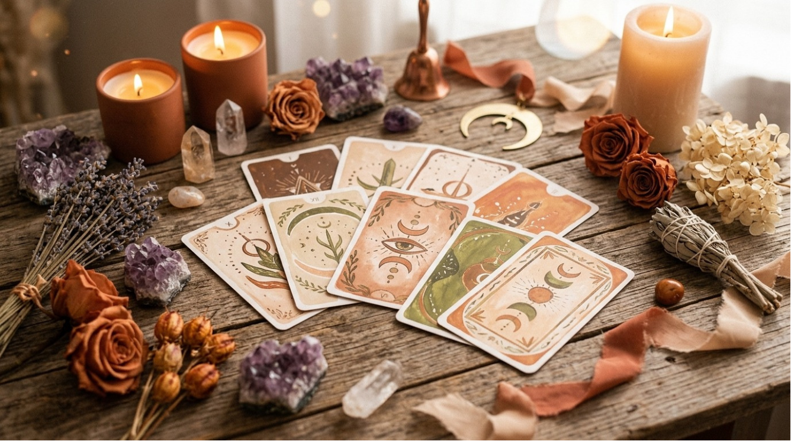

Ciblé
Tirage Thème Précis
Une guidance ciblée autour d'un domaine particulier : amour, travail, famille, évolution personnelle, choix de vie...
35 €
Réserver ce tirage« Les cartes éclairent les énergies du moment afin de vous guider avec douceur sur votre chemin. »
La cartomancie est un outil de guidance intuitive permettant d'apporter un éclairage sur une situation, une période de vie ou un cheminement personnel.
À travers les cartes et les ressentis que je reçois durant le tirage, les messages transmis permettent de mettre en lumière certaines énergies, émotions, blocages ou possibilités afin de vous accompagner avec davantage de clarté et de compréhension.
Chaque guidance est réalisée dans une approche bienveillante, intuitive et respectueuse de votre libre arbitre. Les cartes ne dictent pas un avenir figé.
« Un accompagnement intuitif pas à pas »
Nous prenons tout d’abord un moment d’échange afin de discuter de votre demande, de vos questionnements ou des domaines sur lesquels vous souhaitez être guidé(e).
Le tirage se réalise ensuite à distance, dans un espace calme et bienveillant.
Durant la guidance, je me connecte intuitivement aux énergies présentes afin de transmettre les messages et éclairages reçus à travers les cartes.
À l’issue de la séance, un temps d’échange permet d’approfondir les messages transmis et de répondre à vos éventuelles questions.
Selon la guidance choisie, un compte rendu écrit ou un PDF récapitulatif pourra également vous être transmis.
« Les bienfaits d'une guidance bienveillante »
Une guidance ciblée autour d'un domaine particulier : amour, travail, famille, évolution personnelle, choix de vie...
35 €
Réserver ce tirage
Une guidance intuitive permettant d'obtenir un éclairage global sur les énergies présentes dans votre vie actuelle.
55 €
Réserver la guidance« Vos retours sont précieux et témoignent des belles transformations vécues. »